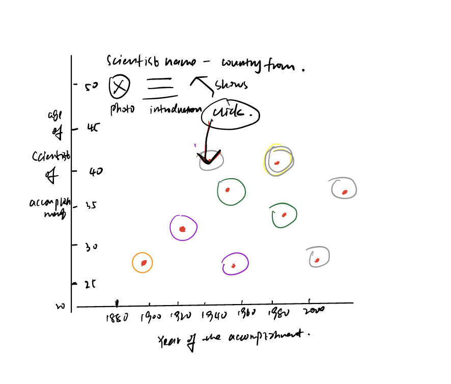
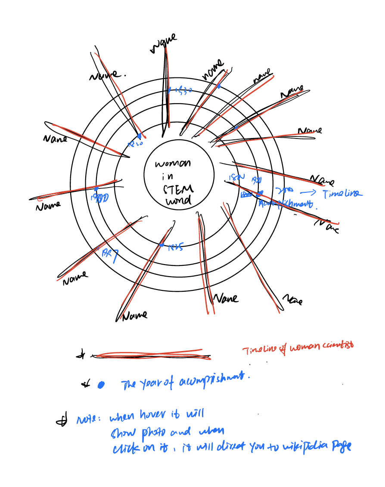

What is Education Attainment? Education attainment refers to the level of education that an individual has completed. It is typically measured in terms of degrees or diplomas earned, such as a high school diploma, a bachelor's degree, a master's degree, or a doctoral degree. Education attainment is often used as a key indicator of an individual's knowledge, skills, and abilities, and it is used by employers, policymakers, and researchers to make decisions about things like job qualifications, educational programs, and funding allocations.
I am exploring the U.S. Census Educational Attainment Data Educational Attainment in the United States: 2020 table package use statistics from the Current Population Surveys Annual Social and Economic Supplement to examine the educational to examine the educational attainment of adults aged 25 and over by demographic and social characteristics, such as age, sex, race, to understand and analysis who and what is driving different trend.
The data used in this project is from the U.S Census data. The data includes education attainment from 2010 to present, excluding the data in education attainment across different race, which is the last one, there is no official data record of Asian from 1940 – 2000. Table package use statistics from the Current Population Survey’s Annual Social and Economic Supplement to examine the educational to examine the educational attainment of adults aged 25 and over by demographic and social characteristics, such as age, sex, race, to understand and analysis who and what is driving different trend.
I aimed to strike a delicate balance in this piece, offering readers both high-level insights at a glance and tools to delve deeper into the data. To achieve this, I included a dashboard component at the bottom of the page, allowing users to filter and highlight data based on different categories and series. Another crucial element was the initial smaller chart that greeted readers, providing a broader, long-term perspective on the overall trend and preparing them for the more detailed information further down the page. In future projects, I plan to incorporate an additional step in my design process. Rather than transitioning directly from a high-level wireframe to coding, I will ensure that each component of the dashboard, including filtered categories, is thoroughly integrated into the wireframe. This approach will provide a more comprehensive understanding of how all the pieces fit together holistically. By doing so, I can avoid potential late-stage changes, such as removing a category from the dashboard, conducting additional data analysis, and adding a new chart at the top of the page.• What’s the education attainment percentage from 2010 and later in the number of man and woman? (sex)
In the draft, I would like to research the following questions and I was planning to use bar chart, line chart and pie chart to illustrate those questions. I was also plan to use map to illustrate in which area of the United States do people aged around 25 and older with a bachelor’s degree or higher have the highest educational attainment, however, as a new D3js player, I gave up in the end.
• What’s the education attainment percentage from 2010 and later in the number of man and woman? (sex)
• Are generational earnings and education related to each other? Even if males and females have the same education level, could there still be a difference in earnings? (sex)
• What does educational attainment look like across different races? Is there a gap between White, Black, Asian, and Hispanic populations for individuals aged 25 years and over who have completed 4 years of college or more between 2000 and 2022? If so, what percentage difference exists? Additionally, what is the gap in educational attainment for different races among individuals aged 25 years and over who have completed 4 years of high school or more? (race)
• Which industry employs the most people with a high school degree? What about those with an associate degree, bachelor's degree, master's degree, professional degree, and doctoral degree? Additionally, what is the relationship between industry choice and educational attainment level?
• In which area of the United States do people aged around 25 and older with a bachelor’s degree or higher have the highest educational attainment?
In this project, my first topic is about Women in STEM, which I decided to pursue after reading a very inspiring article about women in the field. However, once I started working on it, I quickly realized that my current skill level wasn't sufficient for the task at hand. Despite my efforts for two weeks, I eventually gave up just before the two-week deadline. In hindsight, I should have realized earlier that this project required coding rather than drawing (please forgive me, as I was previously a graphic designer). Had I recognized this sooner, I might have avoided the need for a last-minute change to my project. This change involved removing one of the categories from the dashboard, conducting additional data analysis, and adding a new chart at the top.
 From a technical standpoint, I acquired valuable knowledge regarding mouse interactions and the implementation of tooltips in complex charts with numerous elements.By delving into the technical aspects of D3.js, I can gain a deeper understanding of data visualization principles, data building, Data Transformation and Manipulation,Animations and interactive design, enabling me to create powerful and engaging visualizations.
As previously mentioned, I acknowledge that my code lacks the desired level of cleanliness, readability, and reproducibility. Given more time, I would have prioritized refactoring certain components to enhance reusability for future projects. Ideally, I would have planned my project more meticulously to incorporate these considerations from the outset. From a process perspective, my biggest learning was about the value of working through the design process prior to building. My first idea was to create a project about WOMEN IN STEM , but after piecing together my initial draft, I realized that the project is too hard for my current level. It not only took more time to go back and add additional components, but it made my code messier and less readable. So in the end, I gave up for my first idea and start to redo the whole process and choose the educational attainment in Census. Rather than thinking through a smart approach to expand my script to account for these additional components, I rushed through and hard-coded many elements. Furthermore, in future projects or a subsequent iteration of this project, I intend to place a greater emphasis on incorporating animation. Currently, when switching between categories using the dashboard's user interface, the data is appropriately filtered, and the axes smoothly transition, but the lines representing the data do not animate in a meaningful way. Addressing this aspect would contribute to a more engaging and visually appealing user experience.